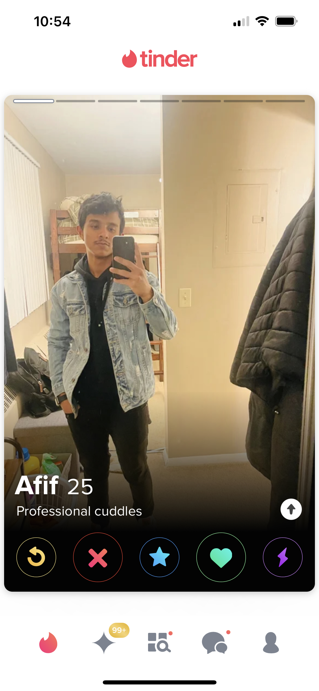

Bios
So if you are fortunate enough that your photos made it past the initial scrutiny of the female gaze, you better make sure your About Me’s carry their weight. While you are more limited in this realm than you are with your photos, it is still a crucial area where your personality can show… for better or worse.
Do:
Your star sign: Girls will read it as either a) you believe in astrology, b) you are trying to appease women, or c) you’ve slept with an astrogirl before. Or she just doesn’t care. None of these options are a bad thing. Bonus points if you can tell her what your moon and rising signs are if she asks.
Be vaccinated: And make sure you flex that you are in your bio.
Link your Instagram: But only if it’s good (see: Photos).
Link your Spotify: I repeat- But only if it’s good! If Juice World, etc. is your number one artist, skip this step.
A funny bio: If you have something witty you can put as your caption, slap it on there. But no “Taking applications for a better half”s or “My mom tells me I’m handsome.” Overused and they were never funny anyway.
Don’t:
List your height as 6’0: If you’re actually six feet tall, put 5’11. If you’re 6’1, own that extra inch. 6’0 even is sus.
List your height if you are shorter than 5’9: Sorry. Let them find out after you’ve had a chance to woo them with your personality. It will soften the blow.
Anything intensely sexual: Chill. All in due time.
Pick-Me-Boy Content: This is frankly a woman-repellant. Pick-me-boy behavior wreaks of a lack of self-respect and/or spine. I would suggest avoiding it at all costs. For more on what constitutes a pick-me boy, check out this article.
